Главная · Библиотека
Библиотека
105 разборов в 11 разделах, от базовых понятий до автоматизации и отраслевой практики. Написаны практиками, которые строили эти системы внутри компаний и участвуют в разработке национальных стандартов. Выберите раздел или найдите нужное поиском.
Что такое риск по стандарту, из каких шагов состоит процесс, кто владелец, как связать риски с целями и с чего начинать компании, у которой системы еще нет.
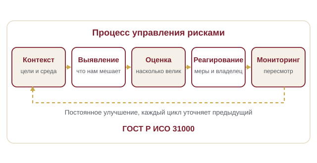
Как сформулировать риск, какие поля нужны в реестре, кто владелец, как построить тепловую карту, считать остаточный уровень и вести пересмотр.
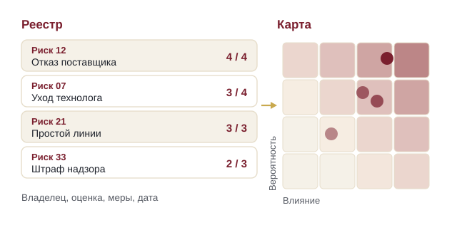
Шкалы вероятности и влияния, матрица и ее пределы, ожидаемые потери, сценарный анализ, Монте-Карло, дерево отказов и правила выбора метода.
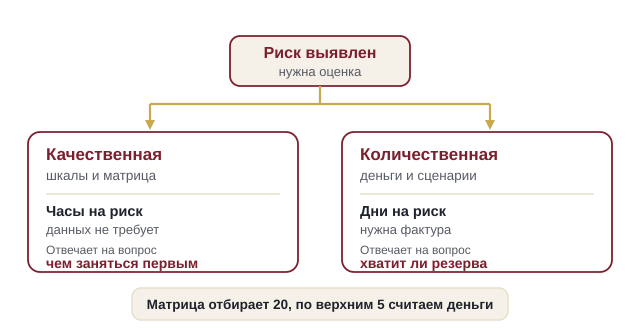
Пять национальных стандартов, статья 87.1 закона об акционерных обществах, кодекс корпоративного управления, требования биржи, три линии защиты и COSO.
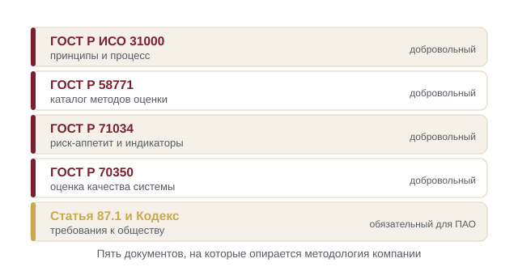
Что такое внутренний контроль, чем отличается от аудита, как проектировать и тестировать контрольные процедуры и как встроить их в бизнес-процесс.
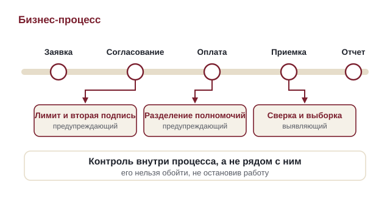
Комплаенс простыми словами, антикоррупционные и антимонопольные требования, санкционные ограничения, экспортный контроль и проверка контрагентов.
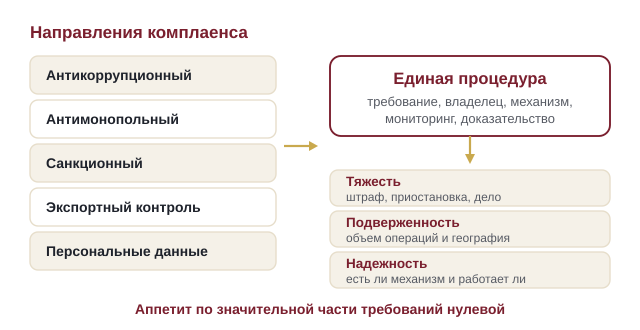
Оценка профессиональных рисков по требованиям Трудового кодекса, методы, карта рисков рабочего места, иерархия мер, документы и типовые ошибки.
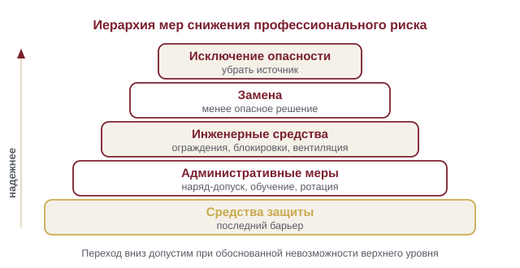
Реестр проекта, контрольные точки, резерв на риски, работа со сроками и подрядчиками, портфельный взгляд и отчет управляющему комитету.
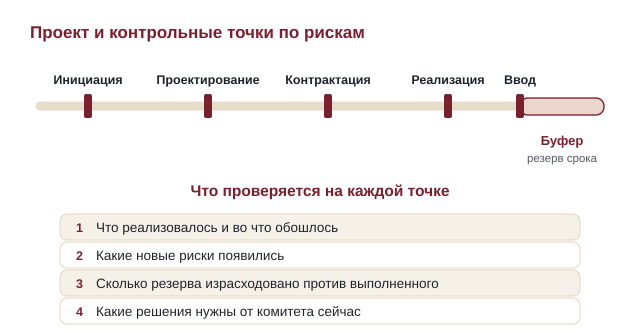
Специфика рисков в нефтегазе, металлургии, строительстве, телекоме, ИТ, банке, рознице и малом бизнесе при единой методологии.
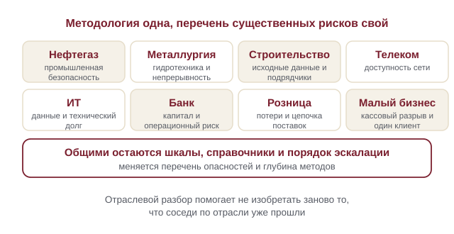
Устройство риск-функции, комитет, риск-культура, сессии и интервью, мотивация, роль риск-менеджера и оценка зрелости системы.
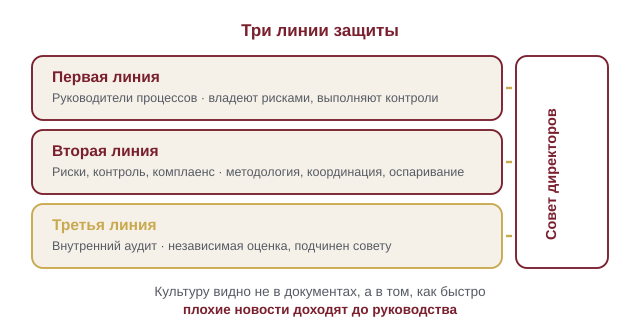
Отчет руководству и совету, индикаторы риска, метрики качества процесса, риск-аппетит, дашборд, автоматизация и переход от таблиц к системе.
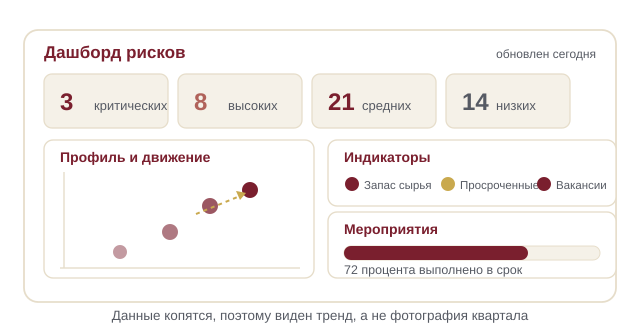
90 понятий простыми словами, с английскими оригиналами. Риск-аппетит, остаточный риск, три линии защиты, индикатор риска, профессиональный риск, комплаенс.
Открыть словарь →Одна форма для любого вопроса
Расскажем о ближайших датах, предложим формат под ваш состав участников и назовем порядок бюджета.
Предпочитаете почту — напишите на info@risk-place.ru. Адрес: Москва, улица Скаковая, 32с2.
 risk-
risk-